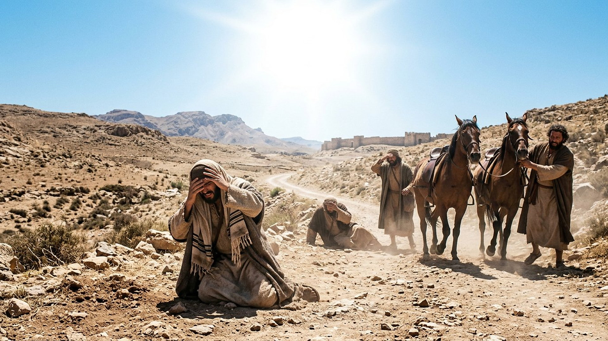
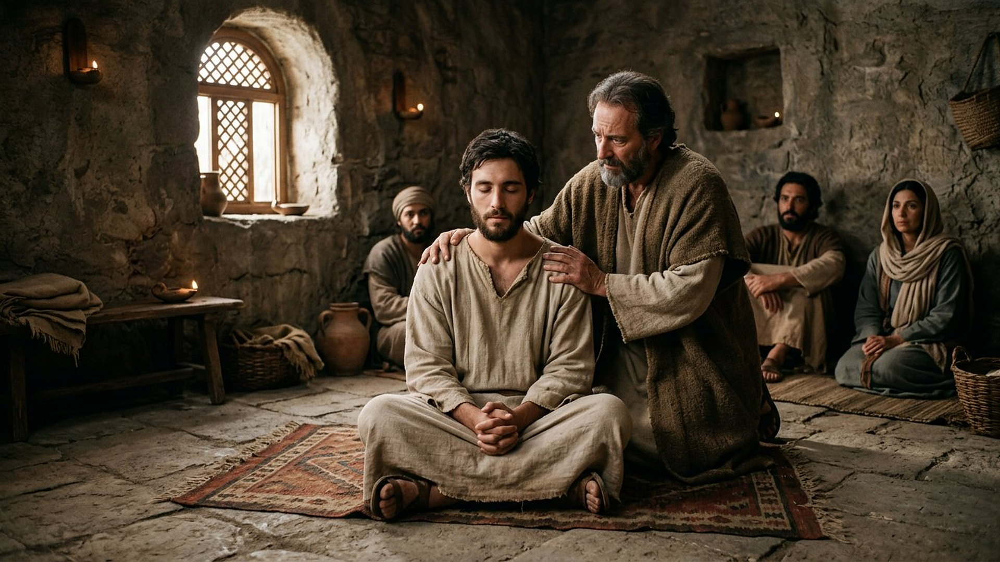
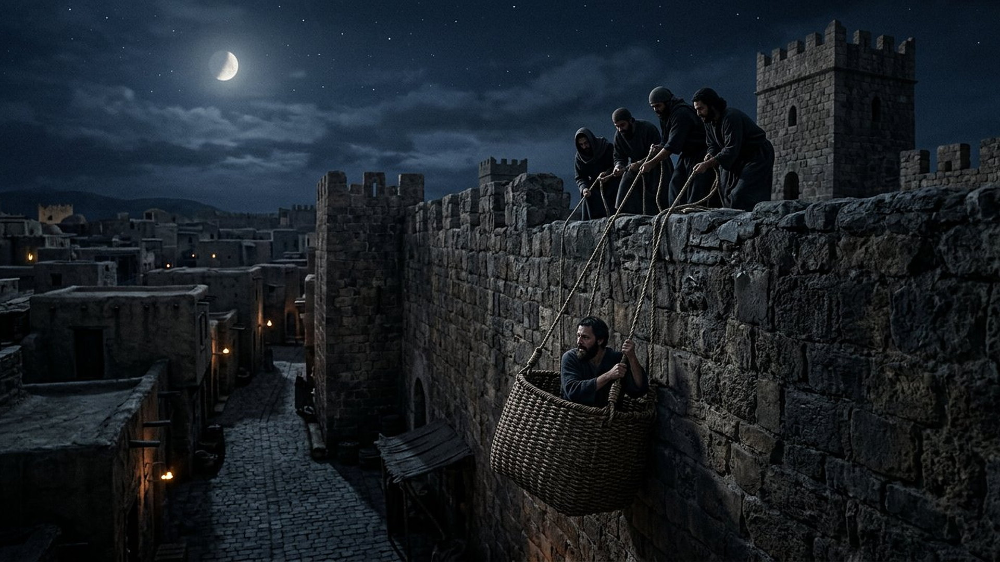

Salle 59 — Actes 9 ACCOMPLIE
Saul : le persécuteur devenu apôtre
« Saul, Saul, pourquoi me persécutes-tu ? — Qui es-tu, Seigneur ? — Je suis Jésus, que tu persécutes. » — Actes 9:4-5 (d’après Segond 1910)
Reconstitution numérique — la lumière sur la route de Damas : aucune figure céleste n’est montrée, seul l’éblouissement des voyageurs.
Un mandat d’arrestation, une route qui bascule
Saul de Tarse (en grec, translittération : Saûlos, puis Paûlos, Paul ; en hébreu : Shāʾûl), jeune pharisien formé à Jérusalem, approuve la lapidation d’Étienne (translittération : Stéphanos) et « ravageait l’Église », faisant traîner en prison hommes et femmes. Muni de lettres du souverain sacrificateur pour les synagogues de Damas, il approche de la ville vers midi lorsqu’une lumière du ciel, plus éclatante que le soleil, l’enveloppe : il tombe à terre et entend une voix l’appeler par son nom — « Saul, Saul, pourquoi me persécutes-tu ? » Ses compagnons, debout, muets de stupeur, le conduisent par la main dans Damas : il est aveugle, et reste trois jours sans manger ni boire. Un disciple de la ville, Ananias (translittération : Hananías), d’abord réticent, vient poser les mains sur lui ; des écailles tombent de ses yeux, il est baptisé, mange, puis se met à prêcher dans les synagogues celui qu’il venait arrêter — jusqu’à devoir fuir la ville de nuit, descendu dans une corbeille le long de la muraille (Actes 7:58 à 9:31, résumé sobre).
Dans la lecture retenue par ce musée, la route de Damas est la conversion la moins préparée du Nouveau Testament : aucun doute de Thomas à examiner (salle 57), aucune route d’explication comme à Emmaüs (salle 58) — un persécuteur en mission, arrêté en plein élan par celui qu’il persécutait. Paul lui-même, dans ses lettres, revendiquera toujours ce retournement comme le fondement de sa mission auprès des nations, tout en se disant « le moindre des apôtres » pour avoir persécuté l’Église (1 Corinthiens 15:9). Les trois récits des Actes et la maison attribuée à Ananias sont présentés ci-dessous avec leurs débats.
Le récit en cinq temps
Du mandat d’arrestation à la corbeille de la muraille, avancez d’une station à l’autre.

Le banc des preuves : une maison de tradition, trois récits à comparer
DÉBATTU
La maison dite d’Ananias à Damas : une tradition souterraine (EV-68)
Dans la vieille ville de Damas, près de la porte orientale, une chapelle en partie souterraine est présentée depuis des siècles comme la maison d’Ananias, au bout de la « rue Droite » (en latin : Via Recta) que nomme Actes 9:11. Vérifié : Damas est l’une des plus anciennes villes habitées du monde, la rue Droite correspond à l’axe romain est-ouest encore lisible, et des traditions chrétiennes y sont attestées dès l’Antiquité tardive. Débattu : l’identification précise de la maison et de ses niveaux les plus anciens, ainsi que toute continuité démontrable avec le Ier siècle. La salle la présente comme un lieu de mémoire, non comme une adresse prouvée, et ne rattache le récit à aucun événement de la Syrie moderne.
LECTURE PROPHÉTIQUE
Un retournement raconté par l’intéressé
Avant même les Actes, Paul témoigne lui-même dans ses lettres : « vous avez entendu parler de ma conduite autrefois dans le judaïsme : je persécutais à outrance l’Église de Dieu » (Galates 1:13, traduction sobre), et il résume l’apparition de Damas dans la liste des témoins de la résurrection (1 Corinthiens 15:8). Le musée suit ces auto-témoignages — parmi les textes chrétiens les plus anciens conservés — comme le noyau de la salle : la conversion n’est pas seulement racontée sur Paul, elle est signée par lui, et il en portera la honte reconnaissante toute sa vie.
DÉBATTU
Trois fois la route de Damas, des détails qui bougent
Luc raconte l’événement trois fois dans les Actes — récit du narrateur (chapitre 9), puis discours de défense de Paul à Jérusalem (chapitre 22) et devant le roi Agrippa (translittération : Agríppas ; chapitre 26) — avec des variantes : les compagnons entendent-ils la voix ou voient-ils seulement la lumière, restent-ils debout ou tombent-ils tous ? Les spécialistes débattent de ces écarts : perspectives de témoins, adaptation aux auditoires, ou composition littéraire. La salle les expose côte à côte, sans forcer l’harmonisation ni conclure du détail variable à l’invention de l’ensemble.
Quatre clés pour bien lire la route de Damas
1. « Pourquoi me persécutes-tu ? » : la victime se nomme
La voix ne dit pas « pourquoi persécutes-tu mes disciples », mais « me » : Jésus s’identifie à ceux qu’on arrête. Saul croyait défendre Dieu contre une secte ; il découvre qu’il frappait celui qu’il prétendait servir. Toute la suite de sa théologie — le corps dont les membres souffrent ensemble — peut se lire comme le dépliement de cette phrase entendue à terre, les yeux brûlés de lumière.
2. Ananias, le courage du second rôle
La conversion de Saul exige l’obéissance d’un inconnu : Ananias proteste — il connaît la réputation du visiteur —, puis entre dans la maison de l’ennemi, pose les mains sur lui et l’appelle « frère Saul » avant tout baptême. Le musée tient à nommer ces seconds rôles sans lesquels les grandes scènes n’arrivent pas : comme Barnabas (translittération : Barnabâs) à Jérusalem, qui prendra par la main le converti dont tous ont encore peur (Actes 9:27) et le présentera aux apôtres.
3. Trois jours d’aveugle, une vie retournée
Le persécuteur qui se faisait guide des autres est conduit par la main, ne voit pas, ne mange pas, prie — c’est pendant ces trois jours que la vision d’Ananias le désigne déjà comme « l’instrument que j’ai choisi, pour porter mon nom devant les nations » (Actes 9:15). La cécité temporaire fait pendant à celle des disciples d’Emmaüs, aux yeux « empêchés » (salle 58) : dans ces récits, voir est toujours le dernier pas, jamais le premier.
4. Le prédicateur commence où il venait arrêter
Sans délai d’apprentissage raconté à Damas, Saul prêche dans les synagogues la foi qu’il voulait détruire, « et tous ceux qui l’entendaient étaient dans l’étonnement ». Quelques jours ou quelques années plus tard — les chronologies des Actes et de Galates 1 se composent avec débat —, ses anciens alliés complotent pour le tuer, et le converti s’échappe dans une corbeille le long de la muraille (2 Corinthiens 11:32-33 le confirme de sa plume). Le persécuteur devenu persécuté mesure en une ville le prix du retournement.
Prescience n’est pas fatalité — arrêté en pleine course
Saul n’avait rien demandé, rien douté, rien cherché : il exécutait un mandat, sûr de son droit. La lumière ne supprime ni sa responsabilité d’avant — il se dira toujours « le moindre des apôtres » — ni sa liberté d’après : Ananias pouvait refuser d’entrer, Saul pouvait refuser de prêcher. L’homme le mieux programmé de sa génération change de direction en une journée, et le passé de persécuteur devient, librement assumé, le premier titre de l’apôtre.

Salle 45 : l’Église que Saul persécutait, née quelques années plus tôt · Salle 58 : d’autres yeux empêchés, ouverts autrement · Salle 43 : les choix qui engagent jusqu’au bout
Écouter la salle
Transcription de la narration
Bienvenue et bonne visite. Dans cette salle, vous découvrirez une route ensoleillée dans un paysage rocailleux, une pièce ancienne aux murs de Pierre, puis une grande muraille plongée dans la nuit, éclairée par la lune. Prenez votre temps pour tout observer. La visite avance en cinq étapes courtes. Prenez le temps d’observer chaque image et de lire les panneaux : ils présentent un retournement complet, une maison très ancienne montrée aux visiteurs, et les questions des spécialistes. Merci de votre attention.